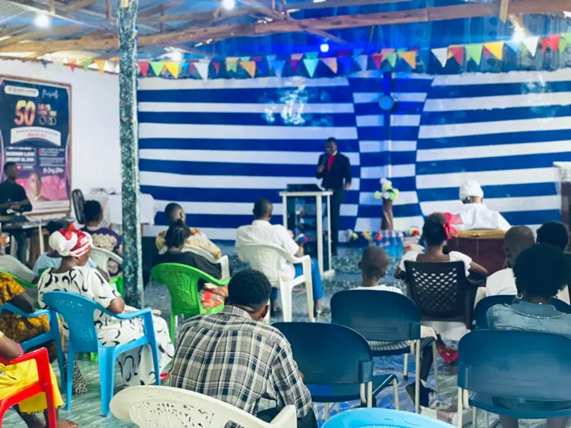

Our Story
Called to the harvest.
A Christ-centered, Spirit-filled, mission-minded and service-oriented church, affiliated with the Worldwide Anglican Church.
Our History
A movement of laborers.
Christ Laborers Church began as an independent Christian ministry and church movement, with a vision to raise faithful disciples, ministers, leaders, families and communities committed to the teachings and mission of Jesus Christ.
The movement was founded in Liberia on March 10, 2020, under the leadership of Bishop Prof. Dr. Amb. Ishmael L. Togbah and his wife, Pastor Frances D. Togbah. Their vision was a Christ-centered ministry marked by biblical teaching, discipleship, leadership development, evangelism, prayer, missions, education, family development and practical community service.
Over time the ministry grew into a broader church and ministry network, with congregational worship, discipleship, ministerial training, leadership development, education, missions, humanitarian service and institutional partnerships. It was later received into the Worldwide Anglican Church as its national diocese in Liberia: a full member and recognized national branch of the Church, keeping its own authority and fellowship.


Our calling is simple
Christ, the Founder of the Church
“I will build my church.”
Matthew 16:18
Human servants may establish local congregations, ministries and movements, but Jesus Christ is the Founder and Head of the Universal Church. Christ Laborers Church recognizes Jesus Christ as the supreme Head, Lord, Savior and foundation of the Church.
Our human leaders are servants and stewards of the ministry, never replacements for Christ.
Our Vision
To become a Christ-centered global church movement that raises disciples, equips leaders, strengthens families, serves humanity and advances the Gospel of Jesus Christ throughout Liberia, Africa and the nations.
Our Mission
To proclaim Jesus Christ, teach biblical truth, disciple believers, equip ministers and leaders, establish healthy congregations, serve communities, and mobilize God's people for evangelism, missions, education, humanitarian service and Kingdom advancement.
Our Core Values
What shapes how we live.
Christ-Centered
Jesus Christ is the center of our faith, worship, mission and ministry.
Biblical
The Holy Scriptures are the foundation for Christian teaching and discipleship.
Prayer
We believe in the power and necessity of prayer.
Discipleship
We are committed to making mature followers of Jesus Christ.
Integrity
We promote honesty, accountability, holiness, transparency and responsible stewardship.
Service
We believe Christian leadership is servant leadership.
Mission
We are called to take the Gospel beyond the walls of the church.
Family
We promote healthy marriages, families, children and relationships.
Excellence
We encourage excellence in ministry, education, leadership, administration and service.
Compassion
We demonstrate the love of Christ through practical care for people.
Our Apostolic & Evangelistic Calling
We fulfill the Great Commission by:
- Preaching the Gospel of Jesus Christ
- Making disciples of all nations
- Teaching the Word of God
- Raising godly and responsible leaders
- Strengthening Christian families
- Serving the poor, vulnerable, widows and orphans
- Promoting peace, reconciliation and human dignity
- Supporting education and professional development
- Establishing churches and ministry communities
- Sending missionaries and evangelists
- Preparing the next generation for Christian service

Our Emblem
Every part of our logo preaches.
Our emblem shows Luke 5:4–6. Jesus tells tired fishermen to put out into deep water and let down their nets. When they obey, the catch is so great that the nets begin to break.
- The radiant cross
Christ is at the center and above everything we do. - Three laborers, one net
Different people and gifts, pulling together in unity. - The overflowing net
Souls won for the Kingdom when we obey His word. - The ribbon: March 10, 2020
A reminder of God's faithfulness from our first day.
What We Believe
Rooted in the historic faith.
As an Anglican church we stand with the one, holy, catholic and apostolic faith confessed in the Apostles' and Nicene Creeds.
The Holy Scriptures
The Bible is the inspired Word of God, containing all things necessary for salvation.
The Holy Trinity
One God, eternally existing as Father, Son and Holy Spirit.
Jesus Christ
Fully God and fully man, crucified for our sins, risen bodily, and coming again in glory.
Salvation by Grace
We are saved by grace through faith in Christ alone, not by our own works.
The Holy Spirit
The Spirit gives new life, empowers believers with gifts, and sends us out in power.
The Sacraments
Holy Baptism and Holy Communion, ordained by Christ, are signs and means of His grace.
The Church
The body of Christ, called to worship, fellowship, make disciples and serve the world.
The Great Commission
Every believer is called to go and make disciples of all nations (Matthew 28:19–20).
Join the Mission
We are Christ Laborers.
- We preach Christ.
- We teach Christ.
- We live for Christ.
- We serve humanity.
- We raise disciples.
- We develop leaders.
- We strengthen families.
- We reach the nations.
Whether you are looking for a church home, seeking discipleship, called to ministry, interested in missions or looking for leadership training, there is a place for you among the Christ Laborers.
Come. Grow. Serve. Go. Plant. Multiply.
“The harvest truly is plenteous, but the labourers are few.” (Matthew 9:37)